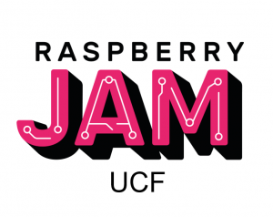
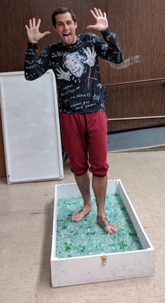
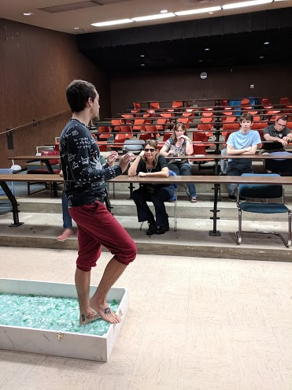

1st UCF Raspberry Jam
I put together a free event to help people develop better knowledge of
Python coding, Raspberry Pi's and Circuit analysis. Where both undergraduate
and graduate students presented projects they completed using Raspberry Pi's.
Click
here to read more about it.

iSTEM and Career Day at UCF
I have volunteered for every iSTEM and Career day event at UCF since 2016.
These events always bring me great joy and I plan to continue volunteering
at all events for as long as I remain at UCF. To the left and right are
pictures of me demonstrating the 'Bed of Broken Glass' stunt. This shows
the audience how something that may seem dangerous is actually quite safe
when we know the Laws of Physics. Here, the concept shows that with large
surface area pressure is reduced allowing for large forces (my weight) to be
supported by the glass without puncturing my bare-feet.


Bed of Nails
Below, is a video of me demonstrating (with the help of another student and
Dr. Efthimiou) the 'Bed of Nails' stunt. This stunt demonstrates the same
physical concept of pressure, however on a much more extreme scale. This
stunt involves sandwiching two students between two beds of nails then
breaking a cinder block on top of the second bed of nails. We also let an
audience member stand atop a flat piece of wood to show that there are no
tricks at play when smashing the cinder block.